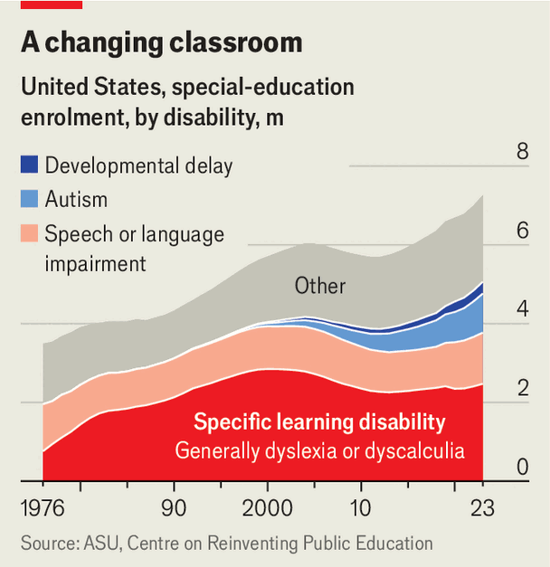

America’s support system for disabled pupils is broken
Unfunded mandates are crushing states and school districts
Sep 3rd 2026
Few policy reform commissions draw up a list of recommendations only to implore lawmakers to ignore them. Yet that is where Minnesota’s Blue Ribbon Commission on Special Education finds itself. Facing a multi-billion-dollar budget shortfall, state lawmakers asked the commission to identify $250m in savings on special education, where spending is expected to swell by nearly $1bn between 2022 and 2027. In August the commission released provisional recommendations and unanimously urged the legislature not to enact any of them, warning of harm to pupils.
Minnesota’s paralysis reflects a national dilemma: educating disabled children is a popular policy, but the sums required under current laws are eye-watering. Across the country, school districts are pulling money from general-education funds to pay for services for pupils with special needs. Even as school enrolment declines, the number of students in special education across the country is rising. Between 2014 and 2023 it grew by 1.4m, from 11.6% of all pupils to 14.7%. In several states—including Indiana, Massachusetts, Minnesota, Pennsylvania and Wyoming—that figure is higher still at roughly one in five. As costs rise, states are confronting fraught questions about who should pay, how well programmes work and what must be pared back to cover the bill.
Fifty years ago, it was estimated that over half of the country’s disabled children received an insufficient education. To remedy this, in 1975 Congress passed what eventually became the Individuals with Disabilities Education Act (IDEA), one of several laws that together guarantee disabled children a “free appropriate public education”. Each eligible child receives an Individualised Education Programme (IEP) specifying the services a school district must provide. These range from occasional speech therapy to a classroom aide or placement in a specialised school, which can cost districts hundreds of thousands of dollars each year.

Congress initially envisaged that the federal government would shoulder much of the cost. IDEA authorised but did not require Washington to fund up to 40% of average national per-pupil spending on each disabled child. In reality, between 2005 and 2021 federal funding for IDEA fell by 12% in real terms (see chart), amounting to an average of just 15.5% of total funding. That has left states and local school districts to find the rest. A report from Bellwether, an education think-tank, found that in 2020 districts footed on average nearly two-thirds of their special-education bill. Districts generally fund schools from local property taxes, which are difficult to raise without provoking revolt. States typically pay for schools from general revenues such as sales and income taxes, but nearly all have balanced-budget requirements that are challenging to meet.

The biggest strain is the rising number of special-education students, a figure that more than doubled between 1976 and 2023, to 7.3m nationally, according to data from the Centre on Reinventing Public Education, a research group at Arizona State University (see chart). Partly this reflects expanding recognition of disabilities previously neglected. Students with autism swelled from a little under 5,000 in 1991, when the disorder was designated as a federal disability category, to just under 1m in 2023. Developmental delay, a category introduced in 1997, grew from roughly 1,900 students that year to about 300,000 in 2023. Criteria for the conditions have broadened; better detection and concerted efforts to evaluate children earlier have probably contributed, too.
As demand swells, districts plug the deficit with money from their general budgets. Bellwether, sampling almost 6,000 school districts and using data from 2020, found a $24.1bn gap between actual special-education spending and the state and federal funds earmarked for that purpose. Because special-education services are legally mandated, finding savings is tricky. A school cannot arbitrarily pare back an IEP. Districts “overspend and overcommit”, says Maggie Cicco Rault, a researcher at Georgetown University, rather than risk violating rules or inviting litigation. Some states have so-called “hold-harmless” provisions which protect districts from losing any of their special-education funding even if changes in enrolment would otherwise reduce it.
States are experimenting with fixes. Minnesota’s commission suggested removing the state’s “hold-harmless” provision and encouraged an investigation into whether legal costs associated with disputes over IEPs can be contained. In 2025 Connecticut legislators passed a law to regulate billing practices of private special-education contractors. That same year Texas overhauled its funding formulas to calibrate them better to the severity of a child’s needs, in an effort to help districts close a $1.7bn shortfall.
Another option is to ask more of the federal government. Lawmakers on both sides of the aisle “agree that the feds need to pony up some more for special ed”, says Cheryl Youakim, a state representative from Minnesota. But the Trump administration is unlikely to oblige. It has dismantled the Department of Education and shifted responsibility for special-education services to the Department of Health and Human Services.
Politicians are wary of being seen as withholding support from disabled children, however. Even Linda McMahon, the secretary of education, has called IDEA a “generational achievement” and proposed increasing its budget by $439m, a small sum relative to national needs. In Minnesota the issue is so fraught that kicking the problem down the road may prove to be the Blue Ribbon Commission’s easiest recommendation to follow. ■
Stay on top of American politics with The US in brief, our daily newsletter with fast analysis of the most important political news, and Checks and Balance, a weekly note that examines the state of American democracy and the issues that matter to voters.